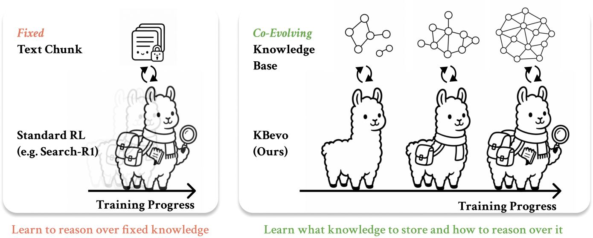
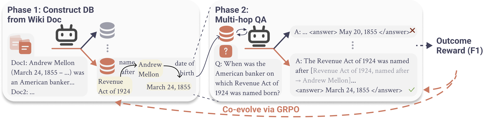
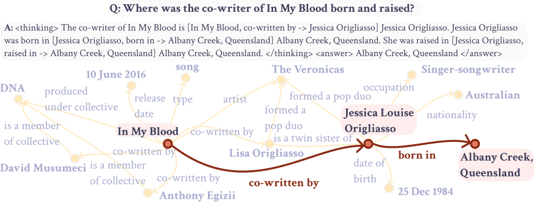
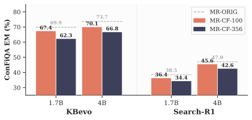
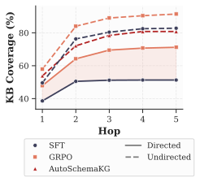
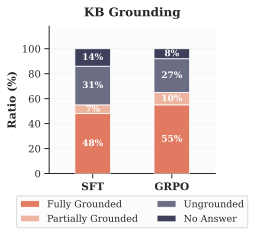
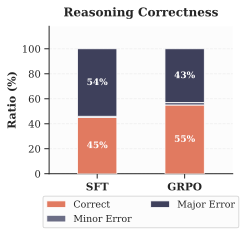
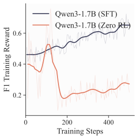
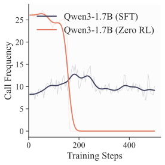
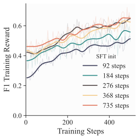

Language models store a vast amount of knowledge in their parameters, but that knowledge is difficult to inspect, update, or remove. Retrieval-augmented models make external information accessible, yet retrieving unstructured text often brings in irrelevant context and gives users only coarse control over what the model sees. Structured knowledge bases offer a more precise interface: facts are explicit, queryable, and editable.
But who should build the knowledge base, and how do we know whether it contains the right facts for reasoning?
We introduce KBevo, a framework in which knowledge construction and reasoning co-evolve. Instead of treating the knowledge base as a fixed resource, KBevo uses downstream question-answering outcomes to learn both what knowledge to store and how to reason over it.

Figure 1. Standard retrieval-based RL improves the reasoning policy while operating over a fixed knowledge store. KBevo jointly optimizes reasoning and structured knowledge base construction, allowing the model and its knowledge base to improve together.
Retrieval-augmented methods improve factual accuracy by grounding language models in external knowledge, but retrieving over unstructured text often introduces irrelevant context and offers limited control over the retrieved information. Structured knowledge bases offer a more controllable alternative, yet they are expensive to construct and often brittle to reason over. To address these limitations, we propose KBevo: a co-evolving framework that jointly learns to construct a structured knowledge base and reason over it for knowledge-intensive question answering. By optimizing both components end-to-end with QA outcome rewards, our method enables reasoning success to directly improve the quality of the constructed knowledge base. This leads to larger, better-connected knowledge structures with higher answer reachability, while also improving compositional factual reasoning and controllability compared to standard retrieval baselines.
Different ways of storing knowledge offer different kinds of access and control.
| Knowledge representation | What the model retrieves | Fact-level inspection and editing | Connection to downstream reasoning |
|---|---|---|---|
| Parametric knowledge | Knowledge implicit in model weights | Difficult | Learned indirectly during pretraining |
| Unstructured retrieval | Passages or text chunks | Coarse-grained | The corpus is usually fixed |
| Static structured KB | Explicit entities and relations | Direct | Usually constructed separately from QA |
| KBevo |
Explicit (entity, relation, value) facts
|
Direct | Construction and reasoning are jointly optimized |
Parametric knowledge is inherently entangled in model weights. Even when a model recalls a fact correctly, there is no simple way to locate that fact, change it, or verify what other behavior an edit might affect. Text-based retrieval externalizes the source material, but the unit of retrieval remains a chunk of prose rather than an individual fact.
Structured KBs expose a cleaner interface. For example, the following fact separates the entity, relation, and value into fields that can be addressed directly.
| Entity | Relation | Value |
|---|---|---|
| In My Blood | co-written by | Jessica Origliasso |
It can be inspected, queried, replaced, or removed directly. The remaining problem is construction: high-quality KBs typically rely on human-designed schemas, human annotation, or expensive frontier-model extraction. They are also usually built independently of the questions that the model ultimately needs to answer.
KBevo connects these two processes. If a missing or poorly organized fact prevents successful reasoning, the resulting QA reward can help improve future knowledge construction.
KBevo uses a single policy in two phases: knowledge-base construction and question answering over the constructed KB.

Figure 2. Overview of our co-evolving framework. The model first constructs a structured knowledge base from context, then answers multihop questions by retrieving and reasoning over it. Both phases are jointly optimized so that knowledge construction and reasoning improve together.
Consider this bridge question from the HotpotQA training set:
Document 1: The song “In My Blood” was co-written by Jessica Origliasso and others.
Document 2: Jessica Origliasso was born and raised in Albany Creek, Queensland.
Question: Where was the co-writer of In My Blood born and raised?
Given supporting documents, the model extracts atomic facts with entity, relation, and value fields. For the HotpotQA example above, the model can construct facts such as:
| Entity | Relation | Value |
|---|---|---|
| In My Blood | co-written by | Jessica Origliasso |
| Jessica Origliasso | born in | Albany Creek, Queensland |
| Jessica Origliasso | raised in | Albany Creek, Queensland |
Together, the extracted entities and relations form a graph. The graph is schema-free: the model learns which relations to express rather than filling a manually specified ontology.
To answer a factual question, the model issues targeted (entity, relation)
lookups and receives the corresponding values from the constructed KB. Retrieved values are inserted into the model's context,
allowing it to compose multiple facts during reasoning.
The same example, visualized in Figure 6 of the paper, shows this process:

The model answers “Where was the co-writer of In My Blood born and raised?” by following a two-hop path:
In My Blood
→ co-written by → Jessica Origliasso
→ born in / raised in → Albany Creek, QueenslandThe pale edges show other facts available in the KB, while the dark path shows the small subset the model actually needs for this question.
At inference time, the KB can be constructed and indexed once, then fixed and reused across many downstream questions.
During training, KBevo samples multiple candidate KBs for the same documents. For each candidate KB, it generates multiple QA rollouts and scores each answer using answer F1. Following the notation in the paper, $b$ indexes the training example, $k$ indexes a candidate KB, and $m$ indexes a QA rollout generated from that KB.
The reward for each QA rollout is
$$ r_{b,k,m}\leftarrow r\!\left(\hat{y}_{b,k,m},a_b^*\right), $$and the reward for candidate KB $G_{b,k}$ is the average reward of its associated QA rollouts:
$$ \bar{r}_{b,k}\leftarrow\frac{1}{M}\sum_{m=1}^{M}r_{b,k,m}. $$A KB that consistently supports correct answers receives a higher reward. GRPO then updates the shared policy using both the KB-construction advantages and the QA advantages. This creates a feedback loop:
The feedback operates through policy optimization during training. It does not manually insert a missing edge after an individual mistake.
We train Qwen3-1.7B and Qwen3-4B models on 7K HotpotQA examples and evaluate them on HotpotQA, MuSiQue, 2WikiMultiHopQA, and PopQA. Exact-match results are shown below.
| Method | HotpotQA* | MuSiQue | 2Wiki | PopQA | Avg |
|---|---|---|---|---|---|
| Qwen3-1.7B | |||||
| Direct | 12.1 | 0.7 | 21.7 | 16.0 | 12.6 |
| RAG | 25.4 | 6.3 | 21.8 | 57.8 | 27.8 |
| IRCoT | 23.7 | 12.2 | 44.0 | 60.7 | 35.2 |
| Search-R1† | 44.1 | 14.3 | 45.9 | 65.3 | 42.4 |
| KBevo-SFT | 29.5 | 13.3 | 44.9 | 57.0 | 36.2 |
| KBevo-GRPO | 37.3 | 18.6 | 47.8 | 61.4 | 41.3 |
| Qwen3-4B | |||||
| Direct | 12.3 | 1.5 | 18.5 | 13.7 | 11.5 |
| RAG | 32.4 | 6.7 | 20.3 | 63.1 | 30.6 |
| IRCoT | 33.0 | 19.7 | 27.1 | 65.0 | 36.2 |
| Search-R1† | 51.1 | 22.6 | 50.4 | 71.8 | 49.0 |
| KBevo-SFT | 35.6 | 16.7 | 40.7 | 54.3 | 36.8 |
| KBevo-GRPO | 46.1 | 26.4 | 51.4 | 62.5 | 46.6 |
Evaluation on multi-hop QA benchmarks and PopQA (EM). * marks the in-domain benchmark. † Reimplemented on Qwen3 backbone.
GRPO improves KBevo over SFT at both model scales and on every benchmark, raising average EM by 5.1 points at 1.7B and 9.8 points at 4B. The result shows that downstream answer reward provides a useful signal for jointly improving KB construction and multi-hop reasoning.
Our closest baseline is Search-R1, which also uses outcome-based RL but retrieves from unstructured text. KBevo-GRPO achieves comparable average EM: 41.3 vs. 42.4 at 1.7B and 46.6 vs. 49.0 at 4B. KBevo performs especially well on MuSiQue and 2WikiMultiHopQA, while retaining an explicit knowledge interface that can be inspected and edited.
Controllability matters only if the model actually follows the edited external knowledge. We test this on ConFiQA-MR, where original facts are replaced by conflict-free counterfactual facts that can disagree with the model's parametric knowledge.

KBevo remains strong after counterfactual edits to the knowledge store. Individual facts can be updated and immediately used for reasoning, without retraining the model.
Because the update occurs in a discrete KB entry, the change is explicit: we can see which fact was replaced and which new value the model retrieved. This is the practical advantage of representing knowledge outside the model in a structured form.
Higher QA accuracy alone cannot tell us whether KBevo constructed a better KB, learned a better reasoning policy, or both. We analyze the two components separately.
We measure whether an answer entity can be reached from entities in the question within a bounded number of hops. GRPO improves answer reachability across hop depths and outperforms static KB-construction methods.

The learned KBs also become larger and better connected. For Qwen3-4B, the average number of triplets grows from 165.7 after SFT to 299.1 after GRPO, while the largest connected component grows from 57.8% to 73.8% of the graph.
The intrinsic evaluation tells the same story. Compared with static construction pipelines, KBevo produces more accurate triples and makes the answer reachable through short graph paths more often.
| KB source | Triplet precision | Triplet recall | Triplet F1 | Answer reachable ≤2 hops | Answer reachable ≤4 hops |
|---|---|---|---|---|---|
| EDC (Mistral-7B) | 0.864 | 0.477 | 0.600 | 63.7% | 69.5% |
| AutoSchemaKG (Llama-3.1-8B) | 0.888 | 0.838 | 0.860 | 72.1% | 80.8% |
| KBevo-1.7B GRPO | 0.925 | 0.923 | 0.924 | 81.3% | 88.4% |
| KBevo-4B GRPO | 0.938 | 0.952 | 0.945 | 84.0% | 90.4% |
Intrinsic KB quality on HotpotQA. This evaluation measures the constructed KB independently of downstream answer generation.
We use an LLM judge to evaluate whether the answer is supported by retrieved KB entries and whether the reasoning chain is logically correct.


After co-evolution, the fraction of fully grounded answers increases from 48% to 55%, and reasoning correctness increases from 45% to 55%. Co-evolution therefore improves both the knowledge available to the model and its ability to use that knowledge.
We first isolate the value of the learned KB by holding the KBevo reasoning policy fixed and swapping in KBs built by other methods.
| KB used at inference | HotpotQA* | MuSiQue | 2Wiki | Average |
|---|---|---|---|---|
| KBevo learned KB | 40.3 | 19.3 | 47.3 | 35.6 |
| EDC KB (Mistral-7B) | 30.2 | 8.3 | 40.1 | 26.2 |
| AutoSchemaKG KB (Llama-3.1-8B) | 29.0 | 16.1 | 28.8 | 24.6 |
| Gemini KB | 38.1 | 19.0 | 54.5 | 37.2 |
The learned KBevo KB substantially outperforms EDC and AutoSchemaKG, even though those pipelines use larger extraction models. The Gemini KB is only 1.6 average-EM points higher, suggesting that KBevo captures much of the downstream utility of the frontier-model KB.
We then remove co-evolution by keeping an external KB fixed throughout training and optimizing only the reasoning policy.
| Training setup | HotpotQA* | MuSiQue | 2Wiki | Average |
|---|---|---|---|---|
| Full KBevo co-evolution | 40.3 | 19.3 | 47.3 | 35.6 |
| Fixed AutoSchemaKG KB | 34.1 | 13.5 | 38.0 | 28.5 |
| Fixed Gemini KB | 38.6 | 15.1 | 54.5 | 36.1 |
Training over a fixed AutoSchemaKG KB reaches 28.5 average EM, below the full co-evolving model's 35.6. A fixed Gemini KB reaches 36.1, showing that a high-quality frontier-model KB remains a strong reference point.
Together, these experiments show why the two sides of KBevo belong together: reasoning optimization cannot fully compensate for a weak fixed KB, and answer feedback can teach a small model to construct knowledge with downstream utility approaching that of a frontier-model teacher.
In our experiments, yes. Starting RL directly from the base model causes both reward and lookup usage to collapse. The model struggles to produce valid structured traces and falls back to internal parametric knowledge.

(a) Zero RL reward collapse

(b) Lookup usage drops

(c) Early SFT is sufficient
Figure 5: Effect of SFT warmup before RL. Starting directly from the base model causes reward and lookup usage to collapse. Even relatively early SFT checkpoints are sufficient to enter the structured reasoning regime and improve during RL.
SFT does not need to be exhaustive, however. Models initialized from earlier SFT checkpoints begin with lower reward but improve quickly during RL and reach similar final performance. SFT appears to establish the structured construction and lookup behavior; RL can then refine what to store and how to reason.
KBevo currently relies on SFT to enter the structured reasoning regime. Larger base models or stronger prompting may reduce this dependence.
QA reward also supervises only the facts retrieved during training. GRPO improves coverage and connectivity, but that does not guarantee that every constructed triple is faithful to the source documents. Broader reward coverage and explicit fact verification are important next steps. The framework may also remain vulnerable to reward hacking, motivating stronger verification and carefully controlled synthetic-question or self-play training.
KBevo treats knowledge construction as part of the learning problem. Downstream QA outcomes teach the model which structured facts support reasoning, while the resulting knowledge remains explicit enough for people to inspect, update, and control.
The broader idea is simple: a model's knowledge and its reasoning policy should improve together, while its facts remain explicit rather than disappearing inside its parameters.
@inproceedings{noonan2026coevolving,
title = {Co-Evolving Structured Knowledge and Reasoning in Language Models},
author = {Noonan, Ryan Thomas and Zhao, Linxi and Xu, Menghan and Sarkar, Akanksha and Mishra, Mihir and Go, Dongyoung and Weinberger, Kilian Q. and Artzi, Yoav and Sun, Jennifer J.},
booktitle = {Conference on Language Modeling (COLM)},
year = {2026},
}